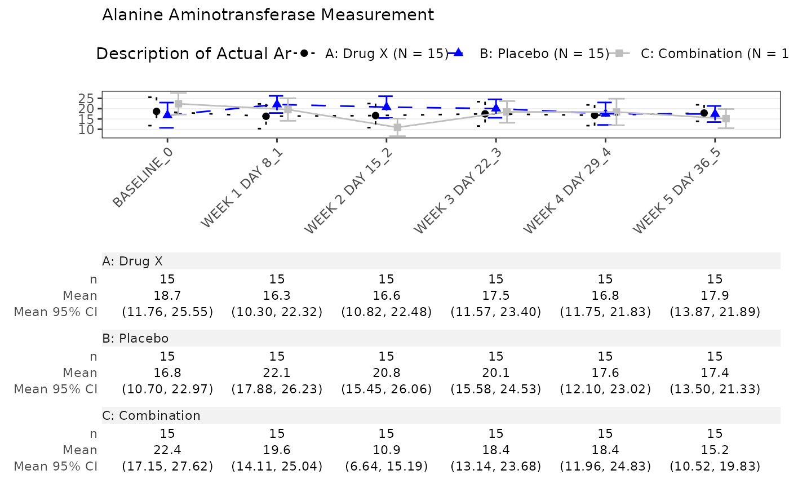
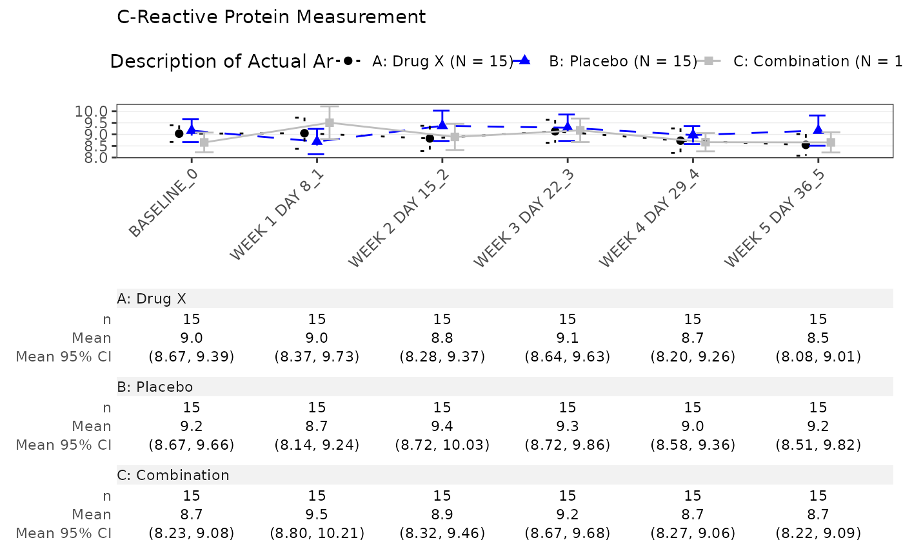
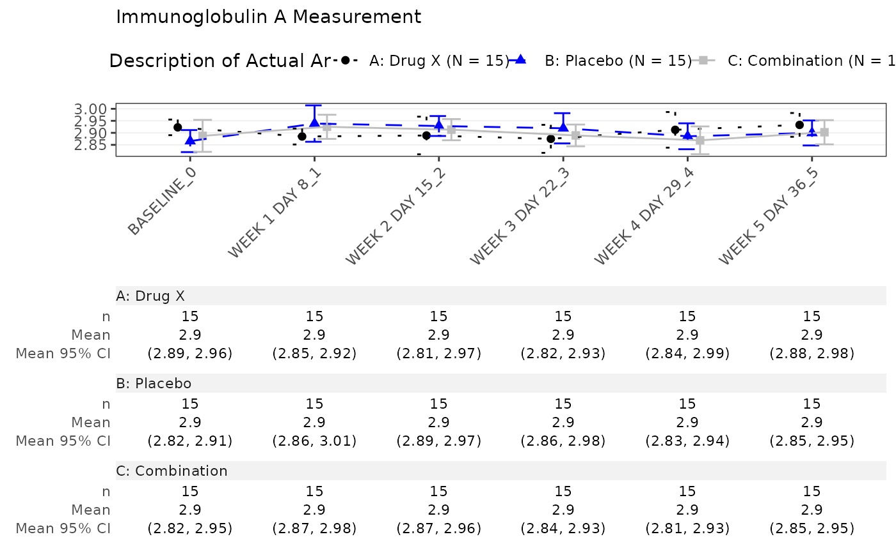

Overview of a summary statistics across time and arm for a selected data set.
Usage
mng01_main(
adam_db,
dataset = "adlb",
x_var = "AVISIT",
y_var = "AVAL",
y_name = "PARAM",
y_unit = NULL,
arm_var = "ACTARM",
center_fun = "mean",
interval_fun = "mean_ci",
jitter = 0.3,
line_col = nestcolor::color_palette(),
line_type = NULL,
ggtheme = gg_theme_chevron(),
table = c("n", center_fun, interval_fun),
...
)
mng01_pre(adam_db, dataset, x_var = "AVISIT", ...)
mng01Arguments
- adam_db
(
listofdata.frames) object containing theADaMdatasets- dataset
(
string) the name of a table in theadam_dbobject.- x_var
(
string) the name of a column in thedatasetto represent on the x-axis.- y_var
(
string) the name of the variable to be represented on the y-axis.- y_name
(
string) the variable name fory. Used for plot's subtitle.- y_unit
(
string) the name of the variable with the units ofy. Used for plot's subtitle. ifNULL, onlyy_nameis displayed as subtitle.- arm_var
(
string) variable used for column splitting- center_fun
(
string) the function to compute the estimate value.- interval_fun
(
string) the function defining the crossbar range. IfNULL, no crossbar is displayed.- jitter
(
numeric) the width of spread for data points on the x-axis; a number from 0 (nojitter) to 1 (highjitter), with a default of 0.3 (slightjitter).- line_col
(
character) describing the colors to use for the lines or a namedcharacterassociating values ofarm_varwith color names.- line_type
(
character) describing the line type to use for the lines or a namedcharacterassociating values ofarm_varwith line types.- ggtheme
(
theme) passed totern::g_lineplot().- table
(
character) names of the statistics to be displayed in the table. IfNULL, no table is displayed.- ...
passed to
tern::g_lineplot().
Value
the main function returns a list of ggplot objects.
a list of ggplot objects.
the preprocessing function returns a list of data.frame.
Note
adam_dbobject must contain the table specified bydatasetwith the columns specified byx_var,y_var,y_name,y_unitandarm_var.
Examples
col <- c(
"A: Drug X" = "black",
"B: Placebo" = "blue",
"C: Combination" = "gray"
)
lt <- c(
"A: Drug X" = "29",
"B: Placebo" = "99",
"C: Combination" = "solid"
)
run(
mng01,
syn_data,
dataset = "adlb",
x_var = c("AVISIT", "AVISITN"),
line_col = col,
line_type = lt
)
#> $`Alanine Aminotransferase Measurement`

#>
#> $`C-Reactive Protein Measurement`

#>
#> $`Immunoglobulin A Measurement`

#>